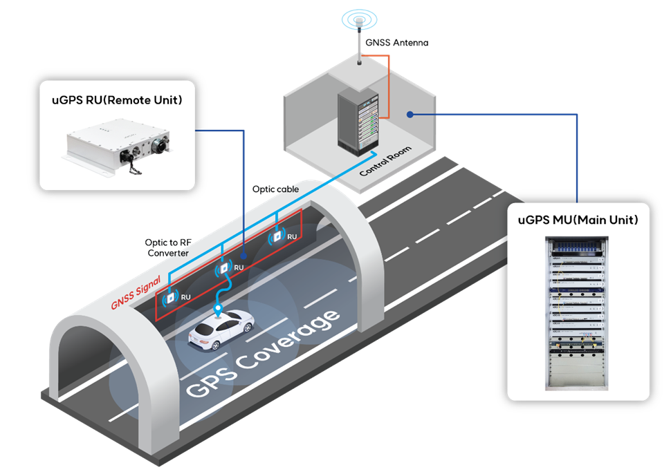
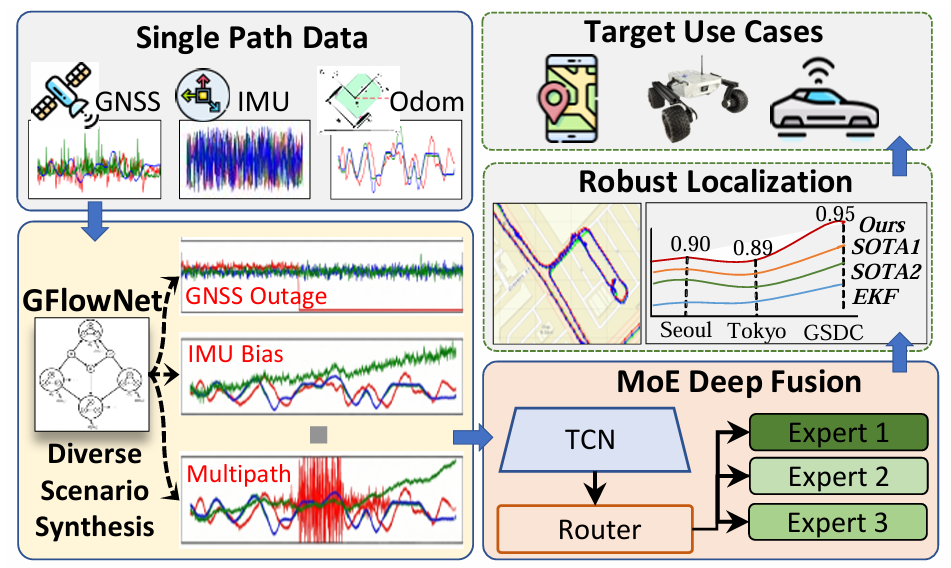
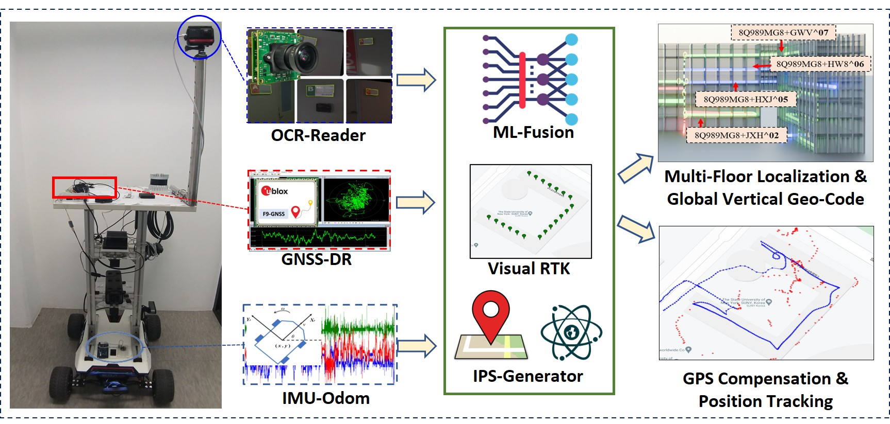
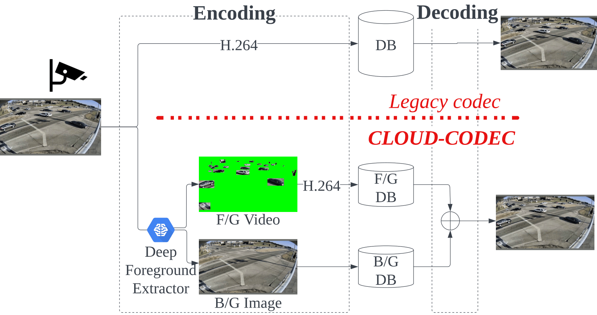
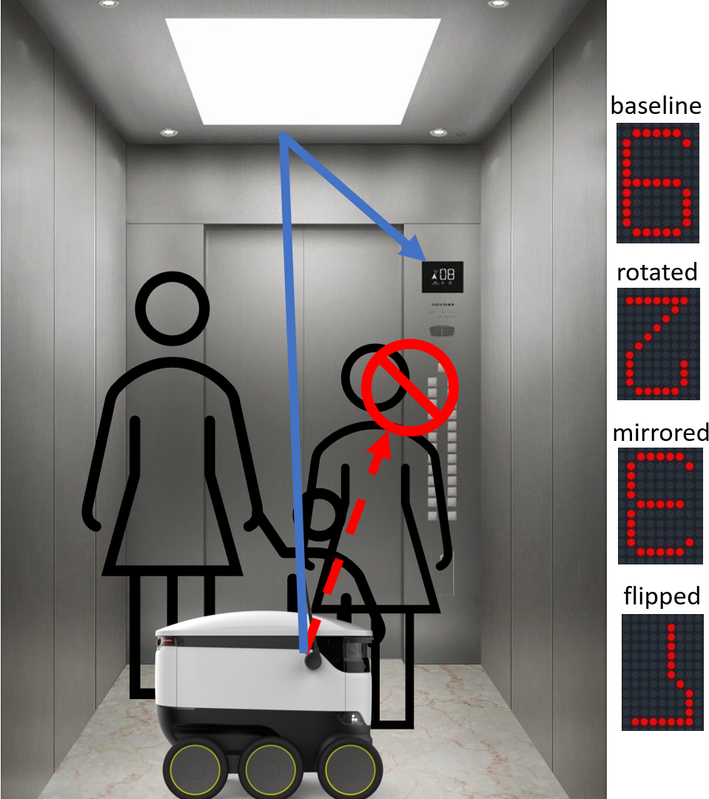
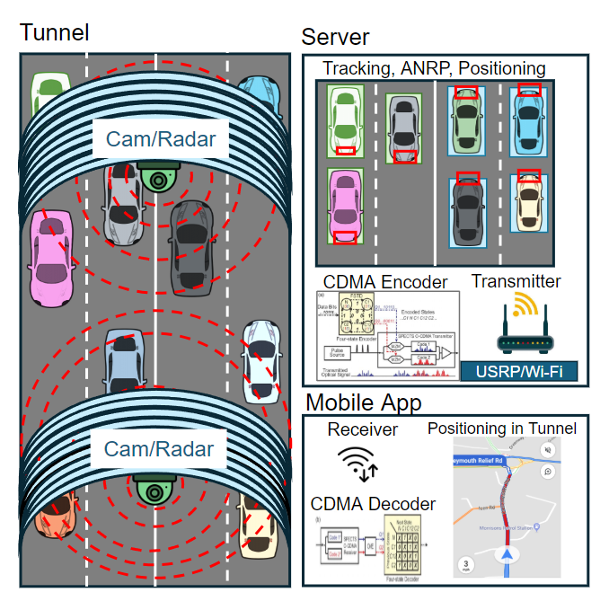
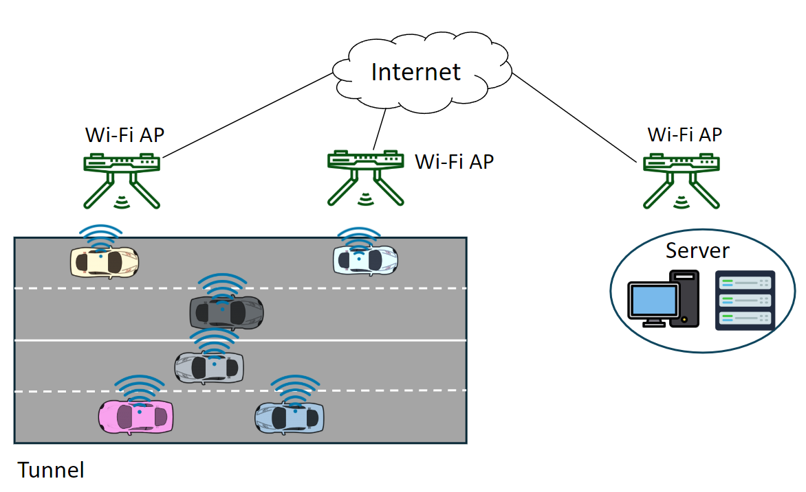

uGPSPseudoliteTunnel PNT
uGPS: Pseudolite at its Finest
GNSS signal generation and field evaluation for continuous positioning in an active tunnel.
- ION GNSS+ 2026, Session D6, Alternate No. 3.
Research Engineer · Ph.D. in Computer Science
I am a Research Engineer at IDCITI in Incheon, South Korea. I earned my Ph.D. in Computer Science from Stony Brook University through the SUNY Korea campus. I develop deployable intelligent systems for robust positioning, multimodal sensor fusion, computer vision, and smart transportation.
My projects connect GNSS-challenged positioning, multimodal data fusion, robot vision, and traffic-camera analytics. Recent work includes uGPS, GFlowLoc, PLUS-CODE+, CLOUD-CODEC, CogniMoE, and MirrorVision.
I also hold an M.Sc. in Computer Engineering from Jeju National University, South Korea, and a B.Sc. in Information Technology from Tashkent University of Information Technologies, Uzbekistan.
News
Featured projects
Project snapshots across robust localization, adaptive sensor fusion, traffic intelligence, and robot vision.

GNSS signal generation and field evaluation for continuous positioning in an active tunnel.

GFlowNet-driven adaptive fusion for robust positioning when sensor reliability changes across GNSS-challenged environments.

Zero-installment rover indoor localization using OCR-based visual RTK, GNSS-dead reckoning, and adaptive DNN fusion.

A traffic-camera video encoding approach that stores object motion compactly using lightweight DNN detection and box-shaped segmentation.

End-to-end multimodal mental workload classification using on-the-fly scalogram generation and Mixture-of-Experts gating.
Project page →
Lightweight elevator floor detection for delivery robots in crowded environments using reflective views from pre-installed mirrors.
Project page →Publications
ION GNSS+ 2026 · Session F2
A. Khudoyberdiev, J. Ryoo.
September 14-18, 2026 · Hyatt Regency Grand Cypress, Orlando, Florida, USA.
ION GNSS+ 2026 · Session D6
A. Khudoyberdiev, H. Kim, J. Ryoo.
September 14-18, 2026 · Hyatt Regency Grand Cypress, Orlando, Florida, USA.
IEEE Sensors Journal · 2025
K. P. Ismaylovna, A. Khudoyberdiev, H.-C. Kim.
IEEE Sensors Journal · 2025
A. Khudoyberdiev, H. Young Kim, J. Ryoo.
ACM TOMM · 2025
H. Kim*, A. Khudoyberdiev*, S. S. R. Garnaik, A. Bhattacharya, J. Ryoo.
*Equal contribution / co-first authors.
Journal of Image and Graphics · 2024
A. Khudoyberdiev, J. Ryoo.
IEEE Access · 2023
A. Khudoyberdiev, S. S. Garnaik, H. Y. Kim, J. Ryoo.
Computers, Materials & Continua · 2023
A. Khudoyberdiev, M. A. Jaleel, I. Ullah, et al.
Journal of Intelligent & Fuzzy Systems · 2021
A. Khudoyberdiev, I. Ullah, D. Kim.
Energies · 2020
A. Khudoyberdiev, S. Ahmad, I. Ullah, D. Kim.
Electronics · 2019
A. Khudoyberdiev, W. Jin, D. Kim.
Experience
Implementation and deployment of AI-based solutions for smart transportation and positioning systems.
Completed doctoral research at the AI2S Lab.
Department of Computer Engineering. IoT and Mobile Computing Research Laboratory.
Information Technology.
Teaching
2021.08 — 2022.08 · Department of Applied Informatics
Spring 2021, 2024, 2025
Technical stack
Python · C/C++ · MATLAB · Java · Android · ROS
PyTorch · TensorFlow · OpenCV · YOLO · Scikit-learn
DNN · CNN · RNN · GNN · LSTM · Transformer · Attention · Autoencoders
GNSS · IMU · Odometry · LiDAR · Cameras · BLE · Wi-Fi · MQTT
Patents & IP
KR Patent · Published 2025.05.28
실내 위치 인식 시스템 및 그 제어 방법
KIPRIS detail pages can be session-dependent, so the site also includes a local copy of the public patent PDF.


Contact
Send a short message by email. The form opens your mail app with the message details.